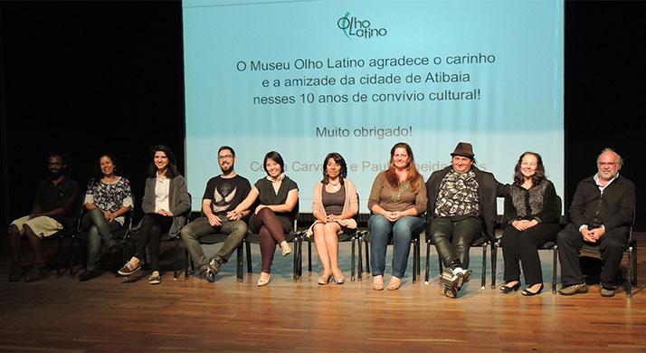
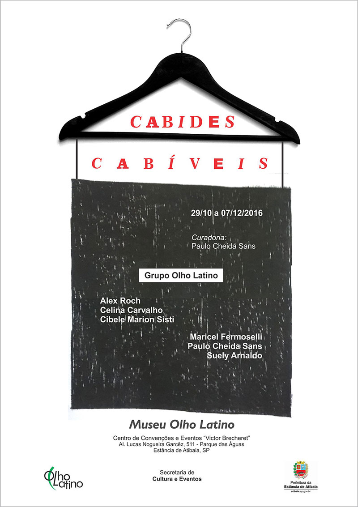

Grupo Olho Latino participa da comemoração dos 10 anos do Museu em Atibaia

Vista parcial da mostra.
Atibaia: O Grupo de Arte do Museu Olho Latino participa da comemoração dos 10 anos de atuação deste Museu em Atibaia com a exposição “O Espantalho que não mente”, de 29 de outubro a 30 de novembro no Centro de Convenções e Eventos “Victor Brecheret” em Atibaia, SP.
A exposição “O Espantalho que não mente” faz parte de um projeto maior que está em desenvolvimento e sendo criado em sucessivas etapas. Para Atibaia estão em exposição duas etapas concluídas que são: as esculturas e as gravuras.
O curador Paulo Cheida Sans diz que a proposta dos espantalhos é abrangente artisticamente e que os artistas do Grupo Olho Latino estão trabalhando de modo constante para concluir o projeto até o final do ano. Cheida comenta que por ser uma comemoração importante para o Museu, decidiu apresentar em Atibaia em primeira mão a essência do projeto que são os espantalhos feitos com gravura e materiais diversificados.

Vista parcial da mostra.
A mostra do Grupo Olho Latino reúne obras realizadas por artistas de várias cidades do interior do Estado de São Paulo. Todos os expositores possuem currículos com inúmeras participações e todos são professores da área de Artes. Participam: Alex Roch, Bruno NITZ, Celina Carvalho, Cibele Marion Sisti, Jana Richardi, Lari Leite, Maricel Fermoselli, Paulo Cheida Sans, Suely Arnaldo, Tatiana Medoruma e Tiago Rego.
A mostra “O Espantalho que não mente” acontece até 30 de novembro no Centro de Convenções, na Al. Lucas Nogueira Garcêz, 511, Parque das Águas, na Estância de Atibaia, SP. A realização do evento é do Museu Olho Latino e da Secretaria de Cultura e Eventos.

(clique na imagem para ampliar)
Evento: “Comemoração dos 10 anos do Museu Olho Latino em Atibaia”.
Data: 29 de outubro de 2016, às 19h.
Exposição: “O Espantalho que não mente” do Grupo Olho Latino.
Curadoria: Paulo Cheida Sans.
Expositores: Alex Roch, Bruno NITZ, Celina Carvalho, Cibele Marion Sisti, Jana Richardi, Lari Leite, Maricel Fermoselli, Paulo Cheida Sans, Suely Arnaldo, Tatiana Medoruma e Tiago Rego.
Período da mostra: 29 de outubro a 30 de novembro de 2016.
Visitação: de segunda a sexta-feira, das 9h às 16h.
Local: Museu Olho Latino e Centro de Convenções e Eventos “Victor Brecheret”
Endereço: Al. Lucas Nogueira Garcêz, 511 - Estância de Atibaia, SP. Entrada Gratuita.
fonte: Portal Olho Latino
Museu Olho Latino comemora 10 anos em Atibaia

Atibaia: O Museu Olho Latino comemora 10 anos de atuação em Atibaia com a abertura de duas exposições e com as apresentações da Banda Sinfônica e do Projeto Guri no sábado, 29 de outubro, às 19h, no Centro de Convenções e Eventos “Victor Brecheret”.
O Museu Olho Latino, fundado pelo casal de artistas Celina Carvalho e Paulo Cheida Sans, em 2001, começou a atuar em Atibaia em 2006, tendo realizado até o momento cerca de 80 mostras na cidade, com vários destaques, como as Bienais do Esquisito e as Bienais de Gravura.
Para a comemoração, o Museu Olho Latino apresentará duas exposições: “O Espantalho que não mente” com obras dos artistas do Grupo Olho Latino e “Cuatro Palos” com obras da artista peruana Olga Flores.
A mostra do Grupo Olho Latino reúne espantalhos e gravuras realizadas por artistas de várias cidades do interior do Estado de São Paulo. Todos os expositores possuem currículos com inúmeras participações e todos são professores da área de Artes. Participam: Alex Roch, Bruno NITZ, Celina Carvalho, Cibele Marion Sisti, Jana Richardi, Lari Leite, Maricel Fermoselli, Paulo Cheida Sans, Suely Arnaldo, Tatiana Medoruma e Tiago Rego.

Tiago Rego, Suely Arnaldo, Jana Richardi, Bruno NITZ, Tatiana Medoruma, artista peruana Olga Flores, Cibele Marion Sisti, Alex Roch, Celina Carvalho e Paulo Cheida Sans.
A participação especial na comemoração é a mostra “Cuatro Palos” da artista peruana Olga Flores. A artista é professora da Especialidade de Gravura na Pontifícia Universidade Católica do Peru e é reconhecida internacionalmente na área da Gravura por ter exposto em vários países e por ser uma das responsáveis da publicação da revista de arte “Rinoceronte”. Olga Flores estará presente na abertura e estará à disposição do público para conversar sobre as suas obras.
A mostra “Cuatro palos” corresponde a jornada migratória empreendida pelo homem para conquistar seu espaço vital, que é sua própria casa. “Cuatro palos” é um termo popular usado para denominar a forma básica de se construir uma casa, uma residência mínima, um lugar totalmente seu. O conjunto de obras da artista Olga Flores está baseado em elementos ancestrais e presentes no imaginário coletivo do Peru, como são o solo, as habitações e as cores.
A comemoração dos “10 anos do Museu Olho Latino em Atibaia” acontece em 29 de outubro, às 19h, no Centro de Convenções, na Al. Lucas Nogueira Garcêz, 511, Parque das Águas, na Estância de Atibaia, SP. As mostras ficarão expostas até 30 de novembro. A realização do evento é do Museu Olho Latino e da Secretaria de Cultura e Eventos.
 (clique na imagem para ampliar)
(clique na imagem para ampliar)
Evento: “Comemoração dos 10 anos do Museu Olho Latino em Atibaia”.
Apresentações musicais: Banda Sinfônica e Projeto Guri. Data: 29 de outubro de 2016, às 19h.
Exposições: “O Espantalho que não mente” do grupo Olho Latino “Cuatro palos” da artista peruana Olga Flores Curadoria: Paulo Cheida Sans.
Período da mostra: 29 de outubro a 30 de novembro de 2016.
Visitação: de segunda a sexta-feira, das 9h às 16h.
Local: Museu Olho Latino e Centro de Convenções e Eventos “Victor Brecheret”
Endereço: Al. Lucas Nogueira Garcêz, 511 - Estância de Atibaia, SP. Entrada Gratuita.
fonte: Portal Olho Latino
Museu Olho Latino expõe Cabides Cabíveis de seu Grupo de Arte

Vista parcial da mostra.
Atibaia: O Museu Olho Latino expõe Cabides Cabíveis de seu Grupo de Arte, de 29 de outubro a 07 de dezembro, em seu espaço expositivo no 1º andar do Centro de Convenções e Eventos “Victor Brecheret” em Atibaia, SP.
A mostra do Grupo Olho Latino reúne obras com técnicas de gravura de modo expansivo que são sustentadas por cabides, formando um conjunto coeso com as características de criação de cada um dos expositores.
Para o curador, Paulo Cheida Sans, “Cabides Cabíveis mostra o potencial de artistas gravadores que propõem a utilização da gravura além de suas possibilidades técnicas inerentes”.
A primeira mostra do Grupo Olho latino, “Papel Latino”, aconteceu na Galeria da Casa da Cultura da América Latina da Universidade de Brasília em 1996. De lá para cá o grupo expôs assiduamente em várias cidades brasileiras e no exterior. Participam da mostra os seguintes artistas: Alex Roch, Celina Carvalho, Cibele Marion Sisti, Maricel Fermoselli, Paulo Cheida Sans e Suely Arnaldo.
A exposição “Cabides Cabíveis” apresenta obras que têm a gravura como germe criativo, que transmite a “marca” fundamental de criação individual para a construção coletiva.
A mostra acontece até 07 de dezembro no Museu Olho Latino, localizado na Al. Lucas Nogueira Garcêz, 511, Parque das Águas, na Estância de Atibaia, SP. A realização do evento é do Museu Olho Latino e da Secretaria de Cultura e Eventos.

(clique na imagem para ampliar)
{kind=link}
Exposição: “Cabides Cabíveis” do Grupo Olho Latino.
Expositores: Alex Roch, Celina Carvalho, Cibele Marion Sisti, Maricel Fermoselli, Paulo Cheida Sans e Suely Arnaldo. Curadoria: Paulo Cheida Sans.
Período da mostra: 29 de outubro a 07 de dezembro de 2016.
Visitação: de segunda a sexta-feira, das 9h às 16h.
Local: Museu Olho Latino no 1º andar do Centro de Convenções e Eventos “Victor Brecheret”.
Endereço: Al. Lucas Nogueira Garcêz, 511 - Estância de Atibaia, SP. Entrada Gratuita.
fonte: Portal Olho Latino
A artista peruana Olga Flores faz mostra especial em comemoração a 10 anos do Museu Olho Latino em Atibaia

Olga Flores.
Atibaia: O Museu Olho Latino comemora 10 anos de atuação em Atibaia apresentando duas exposições “O Espantalho que não mente” de artistas de seu Grupo de Arte e em especial está a mostra da artista peruana Olga Flores intitulada “Cuatro Palos”, de 29 de outubro a 30 de novembro (prorrogada até 20 de dezembro).
Olga Flores é professora da Especialidade de Gravura da Pontifícia Universidade Católica do Peru e é reconhecida internacionalmente na área da Gravura por ter exposto em vários países e por ser uma das responsáveis da publicação da revista de arte “Rinoceronte”. Olga Flores estará presente na abertura dia 29 de outubro, às 19h, e estará à disposição do público para conversar sobre as suas obras.
A mostra “Cuatro palos” corresponde à jornada migratória empreendida pelo homem para conquistar seu espaço vital, que é sua própria casa. “Cuatro palos”, ou seja Quatro Vigas, é um termo popular usado para denominar a forma básica de se construir uma casa, uma residência mínima, um lugar totalmente seu.

Vista parcial da mostra.
O conjunto de obras da artista Olga Flores está baseado em elementos ancestrais e presentes no imaginário coletivo do Peru, como são o solo, as habitações e as cores.
O curador Paulo Cheida diz que a mostra da Olga Flores é um grande exemplo qualitativo da arte da gravura. Diz que além do excelente visual do conjunto das obras em exposição, ressalta que a gravura “O Caminho”, feito com a técnica frottage, tem 11 metros de comprimento e é um dos principais exemplos dessa modalidade já visto no país.
A mostra “Quatro palos” de Olga Flores pode ser visitada até 30 de novembro (prorrogada até 20 de dezembro) no Museu Olho Latino localizado no Centro de Convenções, na Al. Lucas Nogueira Garcêz, 511, Parque das Águas, na Estância de Atibaia, SP. As A realização do evento é do Museu Olho Latino e da Secretaria de Cultura e Eventos.

(clique na imagem para ampliar)
Evento: “Comemoração dos 10 anos do Museu Olho Latino em Atibaia”.
Abertura: 29 de outubro de 2016, às 19h.
Exposição: “Cuatro palos” da artista peruana Olga Flores
Curadoria: Paulo Cheida Sans.
Período da mostra: 29 de outubro a 30 de novembro de 2016 (prorrogada até 20 de dezembro de 2016).
Visitação: de segunda a sexta-feira, das 9h às 16h.
Local: Museu Olho Latino no Centro de Convenções e Eventos “Victor Brecheret”
Endereço: Al. Lucas Nogueira Garcêz, 511 - Estância de Atibaia, SP. Entrada Gratuita.
fonte: Portal Olho Latino
Paulo Cheida Sans participa de mostra no Museu de Arte Contemporânea em Curitiba

Curitiba: O curador do Museu Olho Latino, Paulo Cheida Sans, participa da mostra “Gravuras – poéticas e técnicas diversas” no Museu de Arte Contemporânea (MAC) do Paraná em Curitiba. A mostra, inaugurada em 1º de setembro, está aberta para visitação até 30 de outubro.
O MAC Paraná foi inaugurado em 1970. O acervo do museu detém mais de 1500 obras de diversos artistas plásticos do país adquiridas por meio de compras e doações de colecionadores particulares.

Vista parcial da montagem.
A exposição “Gravuras – poéticas e técnicas diversas” tem origem em um segmento de obras do acervo e apresenta, de forma didática, a técnica e o início da gravura de arte no Brasil e no Paraná. A mostra reúne gravuras de artistas expressivos de renome nacional. Além de Paulo Cheida participam: Poty Lazzarotto, Darel Valença, Lívio Abramo, Orlando da Silva, Renina Katz, Fayga Ostrower, Gilvan Samico, Newton Cavalcanti, Violeta Franco, Fernando Calderari, Danúbio Gonçalves, Uiara Bartira, Denise Roman, Mazé Mendes, Paul Garfunkel, Domicio Pedroso, Juliane Fuganti, Guita Soifer, Tomie Ohtake, Jussara Age, Carlos Eduardo Zimmermann, Francisco Stockinger, Zoravia Bettiol, Elvo Benito Damo, Cícero Dias, Volpi, Marcelo Grassmann, entre outros.
Para Paulo Cheida, “é muito gratificante expor no MAC Paraná juntamente com importantes artistas da história da arte brasileira”. O MAC Paraná tem se destacado por manter uma programação significativa e por valorizar e divulgar o seu acervo em exposições tanto em seu setor expositivo quanto em mostras itinerantes.
Portal Olho Latino